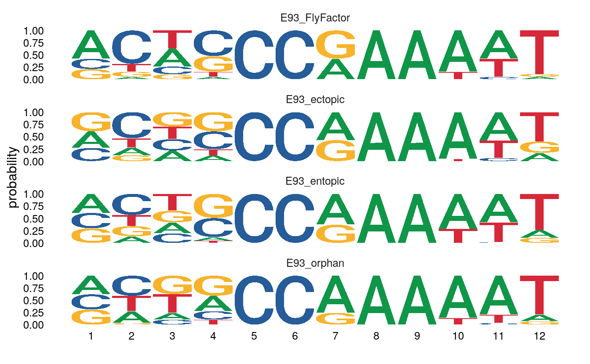

library(dremeR) library(magrittr) library(universalmotif) #> Registered S3 method overwritten by 'treeio': #> method from #> root.phylo ape library(GenomicRanges) #> Loading required package: stats4 #> Loading required package: BiocGenerics #> Loading required package: parallel #> #> Attaching package: 'BiocGenerics' #> The following objects are masked from 'package:parallel': #> #> clusterApply, clusterApplyLB, clusterCall, clusterEvalQ, #> clusterExport, clusterMap, parApply, parCapply, parLapply, #> parLapplyLB, parRapply, parSapply, parSapplyLB #> The following objects are masked from 'package:stats': #> #> IQR, mad, sd, var, xtabs #> The following objects are masked from 'package:base': #> #> anyDuplicated, append, as.data.frame, basename, cbind, colnames, #> dirname, do.call, duplicated, eval, evalq, Filter, Find, get, grep, #> grepl, intersect, is.unsorted, lapply, Map, mapply, match, mget, #> order, paste, pmax, pmax.int, pmin, pmin.int, Position, rank, #> rbind, Reduce, rownames, sapply, setdiff, sort, table, tapply, #> union, unique, unsplit, which, which.max, which.min #> Loading required package: S4Vectors #> #> Attaching package: 'S4Vectors' #> The following object is masked from 'package:base': #> #> expand.grid #> Loading required package: IRanges #> Loading required package: GenomeInfoDb
Inputs
FIMO searches input sequences for occurrances of a motif. runFimo() has two required inputs: fasta-format sequences, with optional genomic coordinate headers, and a set of motifs to detect within the input sequences.
Sequence Inputs:
Sequence input to runFimo() can be as a path to a .fasta formatted file, or as a Biostrings::XStringSet object. Unlike other dremeR functions, runFimo() does not accept a Biostrings::BStringSetList as input. This is to simplify ranged join operations (see joins) on output data.
By default, runFimo() will parse genomic coordinates from sequence entries from the fasta headers. These are generated automatically if using get_sequences() to generate sequences for input from a GRanges object.
data("example_chip_summits", package = "dremeR") dm.genome <- BSgenome.Dmelanogaster.UCSC.dm3::BSgenome.Dmelanogaster.UCSC.dm3 # Take 100bp windows around ChIP-seq summits summit_flank <- example_chip_summits %>% plyranges::anchor_center() %>% plyranges::mutate(width = 100) # Get sequences in peaks as Biostring::BStringSet sequences <- summit_flank %>% get_sequence(dm.genome) # get_sequence includes genomic coordinate as the fasta header name names(sequences)[1:2] #> [1] "chr3L:40482-40581" "chr3L:49795-49894"
Motif Inputs:
Motif input to runFimo() can be as a path to a .meme formatted file, a list of universalmotif objects, or a singular universalmotif object. runFimo() will not use any of the default search path behavior for a motif database as in runAme() or runTomTom().
e93_motif <- MotifDb::MotifDb %>% # Query the database for the E93 motif using it's gene name MotifDb::query("Eip93F") %>% # Convert from motifdb format to universalmotif format universalmotif::convert_motifs() %>% # The result is a list, to simplify the object, return it as a single universalmotif .[[1]] #> See system.file("LICENSE", package="MotifDb") for use restrictions. # Rename the motif from it's flybase gene number to a more user-friendly name e93_motif["name"] <- "E93_FlyFactor"
Note about default settings
runFimo() is configured to use different default behavior relative to the commandline and MEME-Suite Server versions. By default, runFimo() runs using text mode, which greatly increases speed and allows returning all detected matches to the input motifs. runFimo() also runs using skip_matched_sequence = FALSE to further increase speed and decrease output data size. Sequence information can be recovered using get_sequences().
fimo_results <- runFimo(sequences, e93_motif)
Data integration with join operations
The plyranges package provides an extended framework for performing range-based operations in R. While several of its utilities are useful for range-based analyses, the join_ functions are particularly useful for integrating FIMO results with input peak information. A few common examples are briefly highlighted below:
plyranges::join_overlap_left() can be used to add peak-level metadata to motif position information:
fimo_results_with_peak_info <- fimo_results %>% plyranges::join_overlap_left(summit_flank) fimo_results_with_peak_info[1:5] #> GRanges object with 5 ranges and 9 metadata columns: #> seqnames ranges strand | motif_id #> <Rle> <IRanges> <Rle> | <character> #> [1] chr3L 66310-66321 - | E93_FlyFactor #> [2] chr3L 138527-138538 - | E93_FlyFactor #> [3] chr3L 384344-384355 - | E93_FlyFactor #> [4] chr3L 714116-714127 - | E93_FlyFactor #> [5] chr3L 714145-714156 - | E93_FlyFactor #> motif_alt_id score pvalue qvalue #> <character> <numeric> <numeric> <logical> #> [1] Eip93F_SANGER_10_FBgn0013948 14.25 1.01e-05 <NA> #> [2] Eip93F_SANGER_10_FBgn0013948 10.1 8.96e-05 <NA> #> [3] Eip93F_SANGER_10_FBgn0013948 10.87 6.65e-05 <NA> #> [4] Eip93F_SANGER_10_FBgn0013948 12.9 2.43e-05 <NA> #> [5] Eip93F_SANGER_10_FBgn0013948 10.25 8.51e-05 <NA> #> matched_sequence id peak_binding_description #> <logical> <character> <character> #> [1] <NA> peak_4627 ectopic #> [2] <NA> peak_4647 orphan #> [3] <NA> peak_4670 orphan #> [4] <NA> peak_4752 entopic #> [5] <NA> peak_4752 entopic #> e93_sensitive_behavior #> <character> #> [1] Static #> [2] Static #> [3] Decreasing #> [4] Static #> [5] Static #> ------- #> seqinfo: 2 sequences from an unspecified genome; no seqlengths
plyranges::intersect_() can be used to simultaneously subset input peaks to the ranges overlapping motif hits while appending motif-level metadata to each overlap.
input_intersect_hits <- summit_flank %>% plyranges::join_overlap_intersect(fimo_results) input_intersect_hits[1:5] #> GRanges object with 5 ranges and 9 metadata columns: #> seqnames ranges strand | id peak_binding_description #> <Rle> <IRanges> <Rle> | <character> <character> #> [1] chr3L 66310-66321 * | peak_4627 ectopic #> [2] chr3L 138527-138538 * | peak_4647 orphan #> [3] chr3L 384344-384355 * | peak_4670 orphan #> [4] chr3L 714116-714127 * | peak_4752 entopic #> [5] chr3L 714145-714156 * | peak_4752 entopic #> e93_sensitive_behavior motif_id motif_alt_id #> <character> <character> <character> #> [1] Static E93_FlyFactor Eip93F_SANGER_10_FBgn0013948 #> [2] Static E93_FlyFactor Eip93F_SANGER_10_FBgn0013948 #> [3] Decreasing E93_FlyFactor Eip93F_SANGER_10_FBgn0013948 #> [4] Static E93_FlyFactor Eip93F_SANGER_10_FBgn0013948 #> [5] Static E93_FlyFactor Eip93F_SANGER_10_FBgn0013948 #> score pvalue qvalue matched_sequence #> <numeric> <numeric> <logical> <logical> #> [1] 14.25 1.01e-05 <NA> <NA> #> [2] 10.1 8.96e-05 <NA> <NA> #> [3] 10.87 6.65e-05 <NA> <NA> #> [4] 12.9 2.43e-05 <NA> <NA> #> [5] 10.25 8.51e-05 <NA> <NA> #> ------- #> seqinfo: 2 sequences from an unspecified genome; no seqlengths
Identifying matched sequence
When setting skip_match_sequence = TRUE, FIMO does not automatically return the matched sequence within each hit. These sequences can be easily recovered in R using add_sequence() on the FIMO results GRanges object.
fimo_results_with_seq <- fimo_results %>% plyranges::join_overlap_left(summit_flank) %>% add_sequence(dm.genome)
Returning the sequence of the matched regions can be used to re-derive PWMs from different match categories as follows (here done for different binding categories):
motifs_by_binding <- fimo_results_with_seq %>% # Split on parameter of interest split(mcols(.)$peak_binding_description) %>% # Convert GRangesList to regular list() to use `purrr` as.list() %>% # imap passes the list entry as .x and the name of that object to .y purrr::imap(~{ # Pass the sequence column to create_motif to generate a PCM create_motif(.x$sequence, # Append the binding description to the motif name name = paste0("E93_", .y)) })
Motifs from each category can be visualized with universalmotif::view_motifs()
motifs_by_binding %>% view_motifs()
To allow better comparison to the reference motif, we can append it to the list as follows:
motifs_by_binding <- c( # Add the E93 FlyFactor motif to the list as a reference list("E93_FlyFactor" = e93_motif), motifs_by_binding )
Visualizing the motifs as ICMs reveals subtle differences in E93 motif sequence between each category.
motifs_by_binding %>% view_motifs()

Visualizing the results as a position-probability matrix (PPM) does a better job of demonstrating that the primary differences between each category are coming from positions 1-4 in the matched sequences.
motifs_by_binding %>% view_motifs(use.type = "PPM")

Importing Data from previous FIMO Runs
importFimo() can be used to import an fimo.tsv file from a previous run on the MEME server or on the commandline. Details for how to save data from the FIMO webserver are below.
Saving data from FIMO Web Server
To download TSV data from the FIMO Server, right-click the FIMO TSV output link and “Save Target As” or “Save Link As” (see example image below), and save as <filename>.tsv. This file can be read using importFimo().

Citation
dremeR is a wrapper for a select few tools from the MEME Suite, which were developed by another group. In addition to citing dremeR, please cite the MEME Suite tools corresponding to the tools you use.
If you use runFimo() in your analysis, please cite:
Charles E. Grant, Timothy L. Bailey, and William Stafford Noble, “FIMO: Scanning for occurrences of a given motif”, Bioinformatics, 27(7):1017-1018, 2011. full text